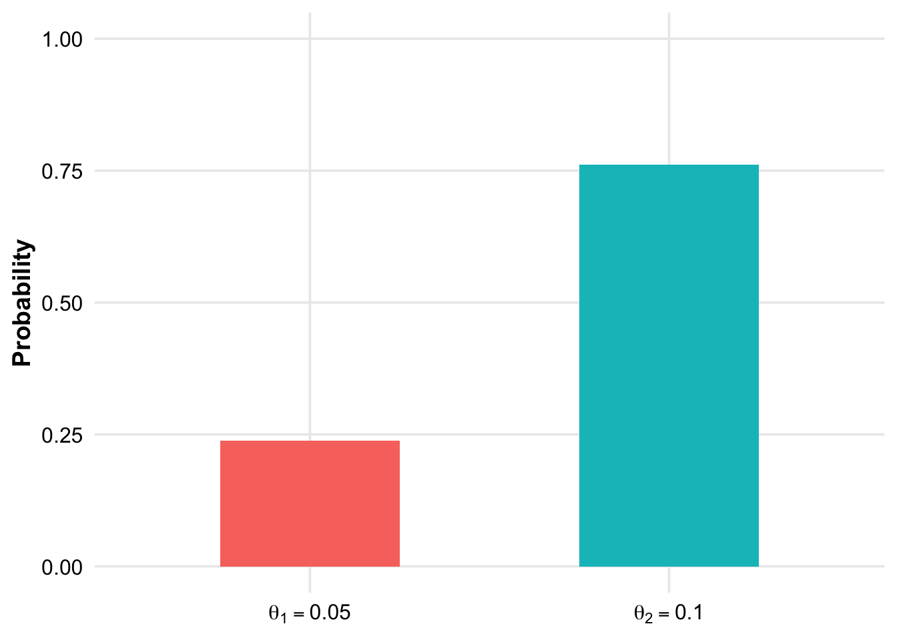
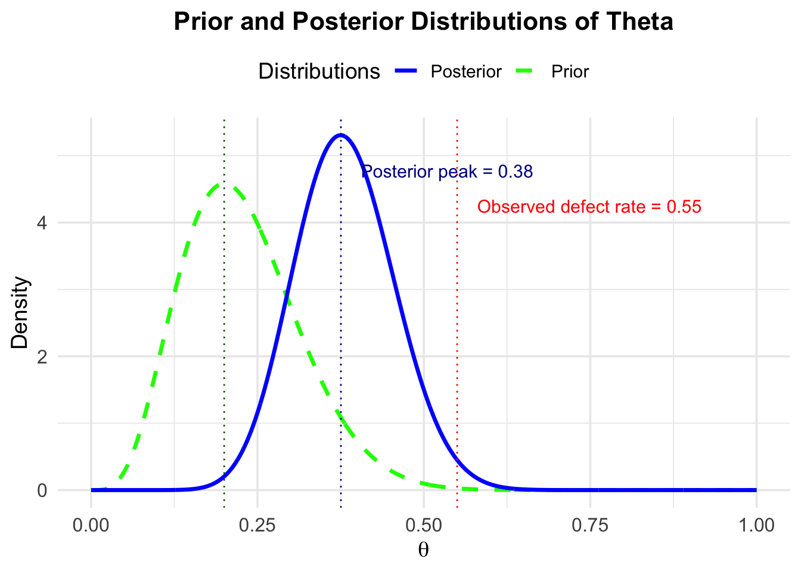
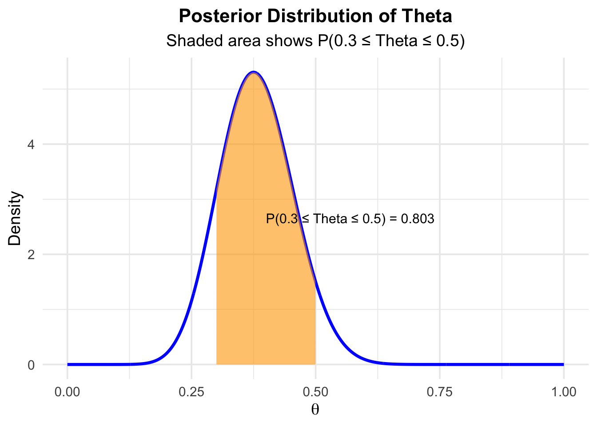
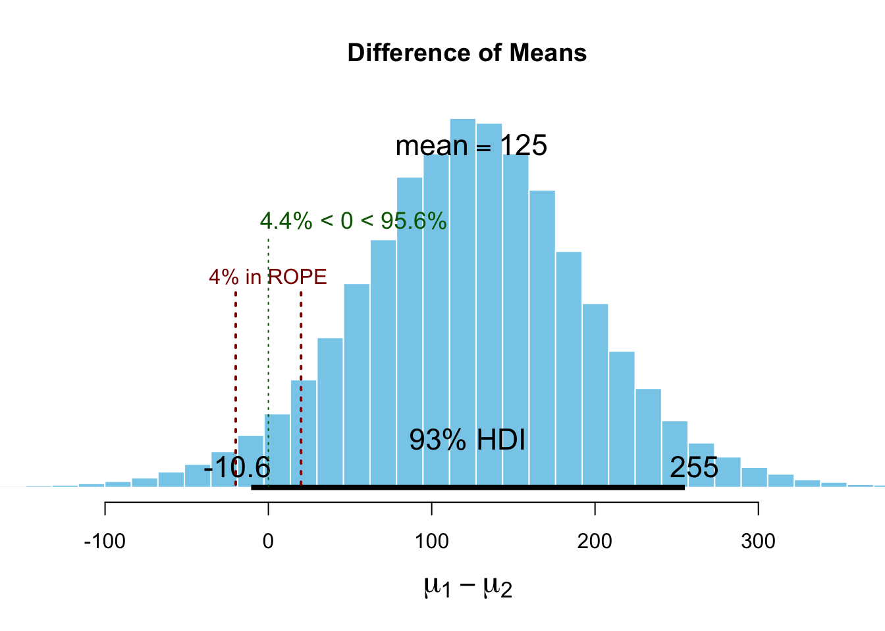

Chapter 4 Bayes statistics
To gain a richer understanding, I can recommend (optionally) reading the introductory chapters in John Kruschke’s book Doing Bayesian Data Analysis.
As stated in the first chapter, Bayesian statistics is based on the idea that probability is a measure of our uncertainty about an event or a parameter. Here, we use prior (i.e., before/outside of our experiment) knowledge about a parameter and update this knowledge with new data using the famous
\[ p(\theta | \text{data}) = \frac{p(\text{data} | \theta) \cdot p(\theta)}{p(\text{data})}, \]
where:
\(p(\theta | \text{data})\) is the posterior probability (respectively the posterior distribution of the parameter): the updated probability of the parameter \(\theta\) given the observed data.
\(p(\text{data} | \theta)\) is the likelihood: the probability of observing the data given a certain value of the parameter \(\theta\).
\(p(\theta)\) is the prior probability (respectively the prior distribution of the parameter): the initial belief about the parameter \(\theta\) before seeing the data.
\(p(\text{data})\) is the marginal likelihood or evidence: the probability of observing the data under all possible parameter values.
In our context, \(\theta\) is an effect size, a group difference (\(\mu_1 - \mu_2\)), a correlation (\(\rho\)), a regression coefficient (\(\beta\)), or a proportion (p)…
4.1 Derivation of Bayes’ theorem
We have already come across Bayes’ theorem in the context of conditional probability where we have calulated the probability of a person having a disease given having tested positive for it:
\[ \mathbb{P}(Dpos|Tpos) = \frac{\mathbb{P}(Tpos|Dpos) \cdot \mathbb{P}(Dpos)}{\mathbb{P}(Tpos)}. \]
The numerator is by definition of the conditional probability just: \(\mathbb{P}(Tpos \cap Dpos)\). Let’s put this in:
\[ \mathbb{P}(Dpos|Tpos) = \frac{\mathbb{P}(Tpos \cap Dpos)}{\mathbb{P}(Tpos)}. \]
which is also true by the definition of conditional probability.
One can rewrite the denominator as:
\[ \mathbb{P}(Tpos) = \mathbb{P}(Tpos|Dpos)\mathbb{P}(Dpos) + \mathbb{P}(Tpos|Dneg)\mathbb{P}(Dneg) = TP + FP, \] since one can have a positive test result if one has the disease (true positive) or if one does not have the disease (false positive). This is the so-called law of total probability. To see this, just draw a binary tree starting with disease status (pos/neg) and test result (pos/neg) as branches, as we did before.
Summarized, we have:
\[ \mathbb{P}(Dpos|Tpos) = \frac{\mathbb{P}(Tpos|Dpos) \cdot \mathbb{P}(Dpos)}{\mathbb{P}(Tpos|Dpos) \cdot \mathbb{P}(Dpos) + \mathbb{P}(Tpos|Dneg) \cdot \mathbb{P}(Dneg)}. \]
We have proven Bayes theorem for the case of a binary test.
Note the simple fact that if \(\mathbb{P}(Dpos)\) (which is the prevalence of the disease) is small, the probability of having the disease given a positive test result is also small. In fact, it is arbitrarily small the smaller the prevalence is. For \(\mathbb{P}(Dpos)=0\), we have \(\mathbb{P}(Dpos|Tpos) = \frac{0}{0 + \mathbb{P}(Tpos|Dneg) \cdot 1} = 0\), assuming that there can still be false positive test results: \(\mathbb{P}(Tpos|Dneg) > 0\).
We could easily image that there are not only two states reported by a test. Maybe, it is a more sophisticated test reporting 3 or 4 states.
We would just extend the denominator accordingly (e.g., for a 3-state test with labels \(T_1, T_2, T_3\), where \(T_3\) indicates a high concentration of some component):
\[ \mathbb{P}(Dpos|T_3) = \frac{\mathbb{P}(T_3|Dpos) \cdot \mathbb{P}(Dpos)}{\mathbb{P}(T_3|Dpos) \cdot \mathbb{P}(Dpos) + \mathbb{P}(T_3|Dneg) \cdot \mathbb{P}(Dneg)}, \] which would be the probability that the person has the disease given that the test result is \(T_3\).
In this context, we are interested in the probability of a state of disease. We estimate this probability based on the test result (\(Tpos\) or \(Tneg\)) and prior knowledge about the disease (\(\mathbb{P}(Dpos)\)). The prior knowledge does not necessarily have to be known before the test, the point is to combine knowledge in a coherent way. We will later see that the order of this combination is not important.
4.2 Bayes’ theorem in the context of parameter estimation
If we use the coin flip example, you can always think of probability of a therapy working for instance. It is a placeholder for a parameter of interest.
A probability distribution outlines all possible outcomes of a random process along with their associated probabilities. For instance, in the case of a coin toss, the distribution is straightforward: there are two outcomes, heads and tails, with corresponding probabilities \(\theta\) and \(1-\theta\). For more complex scenarios, such as measuring the height of a randomly chosen individual, the distribution is less straightforward. Here, each possible height, say 172 cm or 181 cm, is assigned a probability as we have discussed in the context of the normal distribution and continuous distributions in general.
4.3 Examples
We have jumped into the deep end right away with exercise 2 in the previous chapter. Let’s now look at some more examples to get a feeling for how the Bayes theorem works.
4.3.1 Example 1 - defective products
(Example from Script “Statistik und Wahrscheinlichkeitstheorie using R”, S.331 ff, Werner Gurker)
A manufacturer claims that the defect rate of their products is only 5%, while the customer believes it to be 10%. Before the result of a sample inspection is known, we assign both rates an equal 50-50 chance:
\[ \pi(0.05) = \pi(0.10) = 0.5 \]
Assume that in a sample of size 20, there are 3 defective items. Using the binomial distribution \(B(20, \theta)\), the data information is given as follows:
\[ p(3|\theta = 0.05) = \binom{20}{3} (0.05)^3 (0.95)^{17} = 0.0596 \]
\[ p(3|\theta = 0.10) = \binom{20}{3} (0.10)^3 (0.90)^{17} = 0.1901 \]
The marginal distribution of \(X\) (the number of defective items in the sample) for \(x = 3\) is as follows:
\[ m(3) = p(3|0.05)\pi(0.05) + p(3|0.10)\pi(0.10) = 0.1249 \]
Here, we consider all parameters in the parameter space of interest. We are only interested in \(\theta = 0.05\) vs. \(\theta = 0.10\) in this case.
\[ \pi(0.05 \mid X = 3) = \frac{p(3 \mid 0.05) \pi(0.05)}{m(3)} = 0.2387 \]
\[ \pi(0.10 \mid X = 3) = \frac{p(3 \mid 0.10) \pi(0.10)}{m(3)} = \mathbf{0.7613} \]
A priori, we had no preference for either of the two defect rates. After observing a relatively high defect rate of \(3/20 = 15\%\) in the sample, the posterior probability for \(\theta = 0.10\) is approximately three times as likely as \(\theta = 0.05\).
Note that in this example the a priori probabilities were equal:
R codes are in the git repository
After collecting data, we have updated our prior beliefs about the defect rate:
R codes are in the git repository
Let’s assume, we know the manufacturer to be rather untrustworthy. Many inspections in the past revealed higher defect rates than claimed. For simplicity, we still want to decide between the two defect rates. \(0.05\) and \(0.10\).
How does the calculation change if we assign a much higher probability to the defect rate of \(0.10\)? See Exercise 1 for this.
4.3.2 Example 2 - extending the defective products example
What if we do not want to limit ourselves to the two defect rates of 5% and 10%? We now get creative and assign the following prior probability distribution to the defective rate \(\theta\):
R codes are in the git repository

If we had to guess, we would say that the defect rate is most likely 20%. And we are rather sure about this guess. The mode (highest prior probability) of the beta distribution is at 0.2. We are also pretty sure that the defect rate is not 0% or above, say, 50%. This distribution is an expression of our prior beliefs about the defect rate.
Now, we observe 11 defective items in a sample of 20. We expect as posterior distribution not a bar plot with two probabilities for the parameter values \(\theta = 0.05\) and \(\theta = 0.10\), but a distribution of probabilities for all possible defect rates (in the range of 0-1). Btw. we could play the same game using a coin or the effectiveness of a therapy as example.
The only thing we need to do is to plug in the information into Bayes’ theorem to get the posterior distribution. The calculations would be complex by hand, so we just use R. We want to understand the concept, so calculating by hand can be put off until later (if at all necessary for us.)
\[ \textit{p}(\theta \mid X = 11) = \frac{\textit{p}(X = 11 \mid \theta) \cdot \text{Beta}(\theta \mid \alpha, \beta)}{m(11)} \]
\(\text{Beta}(\theta \mid \alpha, \beta)\) is the prior distribution (density) of the defect rate which captures our beliefs about the defect rate.
\(\textit{p}(X = 11 \mid \theta)\) is the likelihood of observing 11 defective items in a sample of 20 given a certain defect rate \(\theta\). This would be the density function of a binomial distribution.
\(m(11)\) is the marginal distribution of the data for \(X = 11\) considering all possible defect rates between 0 and 1.
\(\textit{p}(\theta \mid X = 11)\) is the posterior density of the defect rate given the observed data.
Let’s look at the resulting posterior distribution:
R codes are in the git repository
As we can see, the posterior distribution has a new peak at \(0.38\). If we had to guess now, we would probably say that the defect rate is around 38%. We have updated our beliefs about the defect rate based on the new data. In the graph, there is also the observed defect rate of 55%. This observed rate (new data) draws our prior beliefs towards the observed rate.
The more data we observe, the more the posterior distribution would be drawn towards the observed rate, because we would be surer due to the large sample size.
The stronger our prior beliefs in a certain value (or range) of \(\theta\), the less we are convinced by new data.
One really nice aspect of the Bayesian view is that we get a full probability distribution for the parameter of interest, given the prior beliefs and the observed data. We then can elegantly make all kinds of statements when looking at the posterior, like the following:
- The probability that \(\theta\) is between \(0.30\) and \(0.50\) is (area under the posterior)
approximately \(0.80\):
R codes are in the git repository
 - The probability that \(\theta\) is below \(0.25\) is (area under the posterior):
R codes are in the git repository
The previous two examples showcase how to estimate a proportion using prior knowledge and new data. The fact, that we get a full distribution of the parameter of interest, is a key feature of Bayesian statistics and (as far as I know) not available in frequentist statistics and Null Hypothesis Significance Testing (NHST), which we will discuss in the next chapter.
4.4 Highest Density Intervals (HDI)
Apart from taking the mode or mean of the posterior distribution, another way to summarize a posterior distribution is by using the highest density interval (HDI). The HDI identifies the most credible range of values in a distribution while covering a specified portion of the distribution, such as 93%. The key feature of the HDI is that every point inside the interval has a higher probability density than any point outside the interval, making it an effective summary of the most plausible values.
Here is an example for a 93% HDI for the posterior distribution of \(\theta\):
R codes are in the git repository

Interpretation: The 93% HDI for the posterior distribution of \(\theta\) is \([0.25, 0.51]\). With a probability of 93%, the defect rate is between 25% and 55%, given our prior beliefs and the observed data.
Note that the HDI does not necessarily have to be symmetric around the peak of the distribution.
There could be, for instance, two peaks in the distribution, as you can see here for instance. In that case, the HDI would consist of two intervals. One could readily image a real life case for such a distribution:
{kind=link}
Think of a group of people where the measurement of interest is the 100 m sprint time. There could be two groups of people: The hobby runners and the professional athletes. The distribution of the sprint times would probably be bimodal showing two peaks for the two groups.
There are other ways, one can construct credible intervals. We could also use the quantiles of the posterior distribution to construct a credible interval. If the distribution is symmetric, the quantiles are symmetric around the peak of the distribution and the HDI is the same as the quantile-based credible interval.
A credible interval is not the same as a confidence interval in frequentist statistics. We will discuss this in the next chapter.
Briefly, a credible interval is a range of values for a parameter of interest that has a specified probability of containing the unobserved parameter.
A confidence interval is an interval which is expected to contain the true, but unknown parameter of interest in a certain percent of times (e.g., 92%), when constructed repeatedly everytime a new sample is drawn.
{kind=link}
4.5 Bayesian \(t\)-test
Above, we looked at some aspects of estimating a parameter (proportion) using Bayes’ theorem. We can answer all sorts of other questions using this paradigm. In classical statistics, one often wants to know if two groups differ with respect to their true means. This answer is typically given by the famous \(t\)-test (small “\(t\)” please). I encourage you to read the short history of the \(t\)-test.
For didactic reasons, we will look at the Baysian version of the \(t\)-test first. We want to try to view statistics as more than just a cookbook of recipes. Unfortunately, very often it is taught that way and the impression is given that statistics is just a set of tools to apply in a certain order. In my humble opinion, this is not the case. Statistics and model building is a creative process and - if you want to go so far - an art form. Statistics is difficult and beautiful - in that order.
Unfortunately, it is not completely trivial to apply the Bayesian \(t\)-test, as opposte to the frequentist \(t\)-test, which constitutes one line of code in R.
We’ll use the not anymore maintained R package BEST for a nice illustration. Later, we will use more up-to-date packages like brms or rethinking for modeling.
4.5.1 Example - Bayesian \(t\)-test
For an explanation of the statistical model behind the Bayesian \(t\)-test, visit Kruschke, Figure 2.
## [1] -50 0 120 120 120 190 240 300## [1] -120 -120 -50 0 0 50 110 190## [1] 8## [1] 8## vars n mean sd median trimmed mad min max range skew kurtosis
## y1 1 8 130.0 116.00 120 130.0 140.85 -50 300 350 -0.13 -1.39
## y2 2 8 7.5 107.94 0 7.5 118.61 -120 190 310 0.29 -1.38
## se
## y1 41.01
## y2 38.16# Boxplot:
data.frame(y = c(y1, y2), group = c(rep(1, 8), rep(2, 8))) %>%
ggplot(aes(x = factor(group), y = y)) + # Use factor for discrete x-axis
geom_boxplot() + # Add boxplot layer
geom_jitter(width = 0.1) # Add jitter for individualWe work with a rather small sample size, 8 in each group.
We want to know if the two groups differ in their (unobserved) means.
For this, we will apply the R function BESTmcmc from the package BEST.
set.seed(33443)
p_load(HDInterval, BEST, tictoc, psych, tidyverse)
# H_0: mue1 - mue2 = delta_0
a <- 20 # ROPE (region of practical equivalence)
d_0 <- 0
BESTout <- BESTmcmc(y1, y2, verbose = TRUE)## Waiting for parallel processing to complete...done.plot(BESTout, which = "mean", compVal = d_0,
ROPE = d_0 + c(-1, 1) * a, showCurve = FALSE, credMass = 0.93)
BESTmcmc is a function that uses a Markov Chain Monte Carlo (MCMC)
algorithm to estimate the posterior distribution of the difference between the means of two groups
(the above is not just a histogram of differences).
We do not care about these details for now, but try to interpret what we see.
The plot shows the posterior distribution of the difference between the means of the two groups.
With the parameter
which = "mean", we are interested in the posterior distribution of difference of the means (\(\mu_1 - \mu_2\)). We see a full probability distribution again.The parameter
compVal = d_0is the value we want to compare the posterior distribution to. Here We chose delta_0 = 0, which means that we want to know if the difference between the means is different from zero.The parameter
ROPE = d_0 + c(-1, 1) * a(\(= -20\) to \(20\)) defines the region of practical equivalence (ROPE). In our case, we chose a = 20. This means that we consider differences between the means of the two groups of \(\pm 20\) as practically equivalent. In practice, you would choose a value that is meaningful for your particular research question. For instance, in a planned experiment, we are interested in changes on the Roland Morris Disability Questionnaire (RMDQ) of 2 points. We would then choose a value of 2 for the ROPE, since only a change beyond this value would be clinically relevant for the patient.The parameter
credMass = 0.93is the probability mass to include in credible intervals, in this case 93%.The 93% HDI for the difference between the means is shown in the graph, hence given the prior information and the observed data, we can be 93% sure that the difference between the means is in this interval. The HDI changes everytime the code of this script is run since it’s simulation based.
We can do more:
summary(BESTout, ROPEm = d_0 + c(-1, 1) * a, compValm = 0,
digits = 5, credMass = 0.93) # summary.BEST()## mean median mode HDI% HDIlo HDIup compVal %>compVal
## mu1 130.865 130.843 131.033 93 28.189 225.43
## mu2 5.945 5.643 4.414 93 -84.997 96.48
## muDiff 124.920 125.239 126.427 93 -9.709 259.89 0 95.4
## sigma1 140.351 129.020 111.805 93 65.673 226.92
## sigma2 130.510 119.577 106.330 93 62.372 213.15
## sigmaDiff 9.842 8.779 7.211 93 -117.335 141.35 0 56.4
## nu 34.082 25.425 9.397 93 1.270 83.53
## log10nu 1.375 1.405 1.497 93 0.668 2.06
## effSz 0.965 0.957 0.901 93 -0.119 1.98 0 95.4
## ROPElow ROPEhigh %InROPE
## mu1
## mu2
## muDiff -20 20 4.53
## sigma1
## sigma2
## sigmaDiff
## nu
## log10nu
## effSzIf you look at the row “muDiff” and the column “%>compVal”. This is the percentage of the posterior distribution that is greater than 0. We can say, with a probability of ~95%, the difference between the means is greater than 0. This is nice but not the whole story. The true difference can by greater than 0, but still rather small and clinically irrelevant.
Would we conclude that the two groups differ in their means? According to Kruschke (p.336):
“A parameter value is declared to be not credible, or rejected, if its entire ROPE lies outside the highest density interval (HDI) of the posterior distribution of that parameter.”
This is not the case here. We would not conclude, that the means between the groups differ. One could argue, that this rule seems rather strict considering, that ~95% of the posterior distribution of the differences is greater than 0.
As opposed to the frequentist \(t\)-test, we can also affirm the null hypothesis, that the means in the two groups are equal. This is a nice feature of the Bayesian \(t\)-test.
“A parameter value is declared to be accepted for practical purposes if that value’s ROPE completely contains the X% HDI of the posterior of that parameter.”
This is also not the case here. The 93% HDI lies outside the ROPE to a large part.
Note, “The decision rule for accepting the null value says merely that the most credible values are practically equivalent to the null value according to the chosen ROPE, not necessarily that the null value has high credibility.” (Kruschke, p.337)
We are above in the situation, that we cannot make a clear decision. The ROPE does not fully contain the 93% HDI, and the 93% HDI is not completely outside the ROPE.
“When the HDI and ROPE overlap, with the ROPE not completely containing the HDI, then neither of the above decision rules is satisfied, and we withhold a decision. This means merely that the current data are insufficient to yield a clear decision one way or the other, according to the stated decision criteria.” (Kruschke, p.337)”
What have we learned so far:
Estimating a proportion using Bayes’ theorem Example about the proportion of defective products
Using a whole continuous distribution as prior knowledge Example about the proportion of defective products extended
Analysis if two groups differ in their means or have the same mean Example about the Bayesian t-test
Latest in QM2, we will do Bayesian regression analysis using packages like brms from
Paul Bürkner or
rethinking from Richard McElreath.
4.6 Bayesian updating
See also 5.2.1. Data-order invariance in Kruschke.
The following is an animated example of Bayesian updating. The true probability for heads in a coin toss is \(\theta = 0.77\). We throw a coin 100 times and we start with a uniform prior distribution, i.e., every value between 0 and 1 is equally likely at the beginning. Everytime a coin is tossed, the prior distribution is updated with the new data. The posterior distribution is the prior for the next coin toss et cetera. One can see that we are converging to the “truth” (which is normally not known).
Code can be found here.
## Linking to ImageMagick 6.9.13.29
## Enabled features: cairo, fontconfig, freetype, heic, lcms, pango, raw, rsvg, webp
## Disabled features: fftw, ghostscript, x11## # A tibble: 100 × 7
## format width height colorspace matte filesize density
## <chr> <int> <int> <chr> <lgl> <int> <chr>
## 1 GIF 480 480 sRGB TRUE 0 72x72
## 2 GIF 480 480 sRGB TRUE 0 72x72
## 3 GIF 480 480 sRGB TRUE 0 72x72
## 4 GIF 480 480 sRGB TRUE 0 72x72
## 5 GIF 480 480 sRGB TRUE 0 72x72
## 6 GIF 480 480 sRGB TRUE 0 72x72
## 7 GIF 480 480 sRGB TRUE 0 72x72
## 8 GIF 480 480 sRGB TRUE 0 72x72
## 9 GIF 480 480 sRGB TRUE 0 72x72
## 10 GIF 480 480 sRGB TRUE 0 72x72
## # ℹ 90 more rows
Figure 4.1: example caption
This video illustrates the concept of Bayesian updating as well using two different starting points. The opinions seem to converge.
4.7 More complex parameter spaces
Above we dealt with the rather simple case of one parameter (\(\theta\)), the proportion of defective products or the fairness of a coin. Some of these cases can be solved analytically, like the coin toss example. One can calculate the shape of the posterior distribution exactly. We are mainly interested in simulation-based results, since we are practitioners.
In the Baysian \(t\)-test, we had two groups and the difference of their means. Behind the scenes there were already more than two parameters estimated (see Figure 2 here). Here lies the computational bottleneck of Bayesian statistics. The more parameters we have, the more complex the parameter space becomes. In order to estimate the posterior distribution, we have to sample from the parameter space by walking through intelligently. This can be computationally intensive. The animation in this article shows the walk through of the parameter space nicely for the case of a normal distribution with two parameters (\(\mu\) and \(\sigma\)).
For statistical models with many parameters and observations, the computation can take a long time. Very often though, computational time is not an issue and we can make use of the flexibility and intuitive interpretation of Bayesian statistics.
4.8 Advantages/disadvantages of Bayesian statistics
4.8.1 (Some) Advantages
Full probability distributions: We get a full probability distribution for the parameter of interest.
Flexibility: We can incorporate prior knowledge into our analysis.
Interpretability: We can make statements about the probability of certain parameter values.
No \(p\)-values: We do not need to rely on \(p\)-values and NHST (Null Hypothesis Significance Testing). John Kruschke points out many problems with NHST in his book and article. It seems that for many practinioners, \(p\)-values are hard to understand and interpret correctly. There are many misconceptions about \(p\)-values. And one should definitely move away from dichotomous thinking of “significant” and “non-significant” results.
4.8.2 (Some) Disadvantages
Computational complexity: Calculating the posterior distribution can be computationally intensive. Even with modern computers and the latest packages, it can take a long time to get results. Classical statistical models are often estimated within fractions of a second.
Barriers to entry: Statistics courses and textbooks often focus on frequentist statistics, as well as many sofware packages lean more towards frequentist statistics. This can make it difficult for newcomers to learn Bayesian statistics. When publishing, many reviewers could be sceptical or unfamiliar with Bayesian statistics.
Subjectivity: The choice of the prior distribution can be subjective.
4.10 [E] Exercise 1 - defective product rate
Let’s revisit Example 1 and change the prior probabilites to \(\pi(0.05) = 0.1\) and \(\pi(0.10) = 0.9\).
Calculate and plot the posterior probabilities for \(\theta = 0.05\) and \(\theta = 0.10\).
4.11 [H] Exercise 2 - Bayesian updating
We want to check empirically that the order of data collection does not influence the posterior distribution. We want to find out the probability \(\theta\) of a therapy to work. Since we have absolutely no idea, how effective the therapy is, let our prior distribution be a uniform distribution between 0 and 1 (this has to be argued for more rigorously in practice). Hence, every value between 0 and 1 is equally likely:
\(\pi(\theta) = 1\) for \(\theta \in [0,1]\).
# Load required libraries
library(ggplot2)
# Generate data for a uniform distribution
theta <- seq(0, 1, length.out = 100) # Range of theta
density <- dunif(theta, min = 0, max = 1) # Uniform density
# Create a data frame for ggplot
df <- data.frame(theta = theta, density = density)
# Plot the density function
ggplot(df, aes(x = theta, y = density)) +
geom_line(color = "blue", linewidth = 1.2) + # Density line
geom_area(fill = "lightblue", alpha = 0.5) + # Shaded area under the curve
labs(
title = "Prior: Uniform Distribution",
x = expression(theta),
y = "Density"
) +
theme_minimal(base_size = 14) +
theme(
plot.title = element_text(face = "bold", size = 16, hjust = 0.5),
axis.title = element_text(face = "bold")
)Notize, that the area under the curve is 1, since it is a probability density function. For example, \(\mathbb{P}(\theta \in (0.25,0.75)) = 0.5\)
- Experiment 1 one shows that the therapy works in 17 out of 50 cases.
- Experiment 2 shows that the therapy works in 23 out of 50 cases.
So we go from:
Prior \(\rightarrow\) experiment 1 \(\rightarrow\) posterior 1 \(\rightarrow\) experiment 2 \(\rightarrow\) posterior12.
Or
Prior \(\rightarrow\) experiment 2 \(\rightarrow\) posterior 2 \(\rightarrow\) experiment 1 \(\rightarrow\) posterior21.
Show that posterior12 and posterior21 should be the same and draw both posterior distributions into one plot.
[Optional] Show this result analytically.
4.12 Solutions
Solutions for this chapter can be found here.
4.13 Sample exam questions for this chapter (in German since exam is in German)
For this section, no solutions are provided.
4.13.1 Frage 1
sleep: Daten, die die Wirkung von zwei schlaffördernden Medikamenten (Zunahme der Schlafstunden im Vergleich zur Kontrollgruppe) bei 10 Patienten zeigen.
Wir führen einen Bayesian \(t\)-test auf Gleichheit der Mittelwerte der beiden Gruppen durch:
## Waiting for parallel processing to complete...done.## 1.894 sec elapsed## mean median mode HDI% HDIlo HDIup compVal %>compVal ROPElow
## mu1 0.717 0.710 0.716 93 -0.517 2.006
## mu2 2.301 2.301 2.316 93 0.886 3.706
## muDiff -1.584 -1.590 -1.646 93 -3.472 0.313 0 6.21 -1.8
## sigma1 2.043 1.923 1.751 93 1.092 3.109
## sigma2 2.302 2.172 1.974 93 1.275 3.486
## sigmaDiff -0.260 -0.246 -0.218 93 -1.988 1.363 0 37.37
## nu 36.152 27.574 12.304 93 1.453 86.327
## log10nu 1.413 1.440 1.524 93 0.718 2.055
## effSz -0.749 -0.745 -0.702 93 -1.634 0.140 0 6.21
## ROPEhigh %InROPE
## mu1
## mu2
## muDiff 1.8 58.2
## sigma1
## sigma2
## sigmaDiff
## nu
## log10nu
## effSz
Welche der folgenden Aussage(n) ist/sind korrekt (0-4 korrekte Antworten)?
- -1.59 ist eine (aufgrund des Bayes \(t\)-tests) plausible Schätzung für die Differenz der Mittelwerte der beiden Gruppen.
- Wäre die ROPE halb so groß, würde die Testentscheidung anders ausfallen.
- 93% der posterior Verteilung der Differenz der Mittelwerte liegt im Interval \([-3.48, 0.298]\).
- Die Testentscheidung lautet: “Die Mittelwerte der beiden Gruppen sind nicht gleich.”
4.13.2 Frage 2
\[ \mathbb{P}(Dpos|Tpos) = \frac{\mathbb{P}(Tpos|Dpos) \cdot \mathbb{P}(Dpos)}{\mathbb{P}(Tpos|Dpos) \cdot \mathbb{P}(Dpos) + (1-\mathbb{P}(Tneg|Dneg)) \cdot \mathbb{P}(Dneg)}. \]
Welche der folgenden Aussagen ist/sind korrekt (0-4 korrekte Antworten)?
Mit einer Spezifität von 1, wäre die Wahrscheinlichkeit für eine Krankheit, wenn der Test positiv ist, gleich 1.
Mit einer Sensitivität von 1, wäre die Wahrscheinlichkeit für eine Krankheit, wenn der Test positiv ist, gleich 1.
Falls \(\mathbb{P}(Dpos) = 1\), ist \(\mathbb{P}(Dpos|Tpos) = 1\).
Im Nenner des Bayes’schen Theorems steht die Wahrscheinlichkeit, dass der Test positiv ist.
4.13.3 Frage 3
Bei einer Bayes’schen Analyse eines Fehleranteils verwenden wir folgende a priori Verteilung für den Fehleranteil \(\theta\):
Welche der folgenden Aussagen ist/sind korrekt (0-4 korrekte Antworten)?
Die a priori Wahrscheinlichkeit, dass der Fehleranteil \(0.02\) beträgt, ist \(0.02\).
Die a priori Wahrscheinlichkeit, dass der Fehleranteil im (geschlossenen) Interval \([0.02, 0.08]\) liegt, ist 0.
Hier handelt es sich um eine diskrete a priori Verteilung und man untersucht lediglich, welcher der beiden Fehleranteile wahrscheinlicher ist.
Man beobachtet bei einer Stichprobe von \(20\) Produkten, dass \(0\) davon fehlerhaft sind. A posteriori wird der Fehleranteil \(0.08\) nun mehr als 50% Wahrscheinlichkeit erhalten.